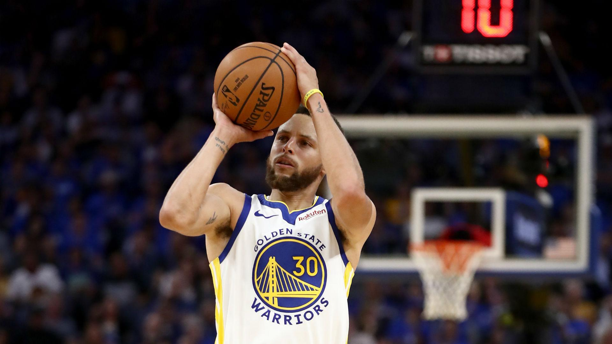

|
Stephen Curry es un jugador profesional de baloncesto estadounidense, considerado el mejor tirador de triples en la historia de la NBA. Juega para los Golden State Warriors y ha revolucionado el juego con su habilidad para anotar desde larga distancia. Ha ganado varios campeonatos de la NBA y ha sido nombrado MVP de la liga en dos ocasiones. Su estilo de juego ha cambiado la manera en que se juega el baloncesto moderno..
menu principal
|

 Stephen Curry
Stephen Curry